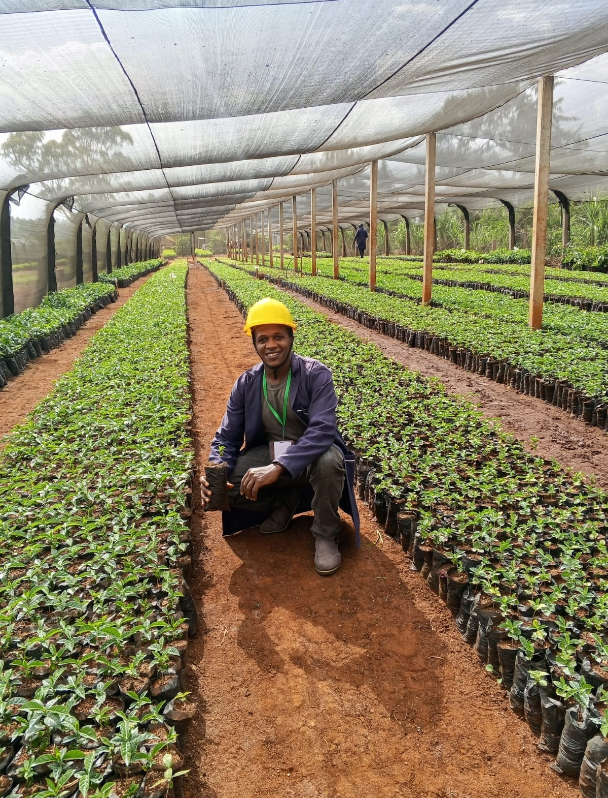
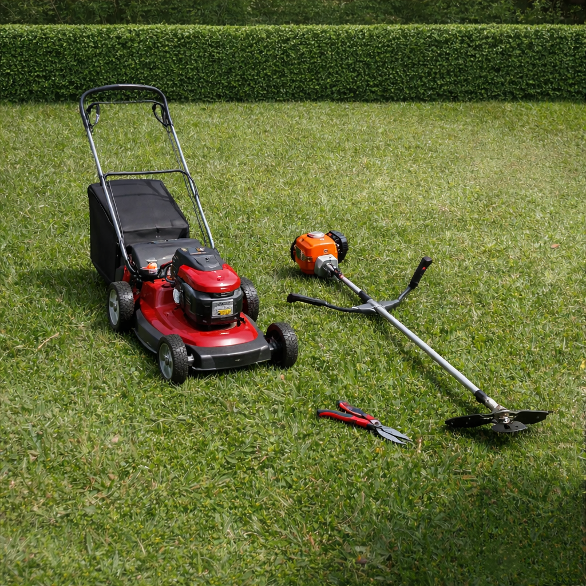
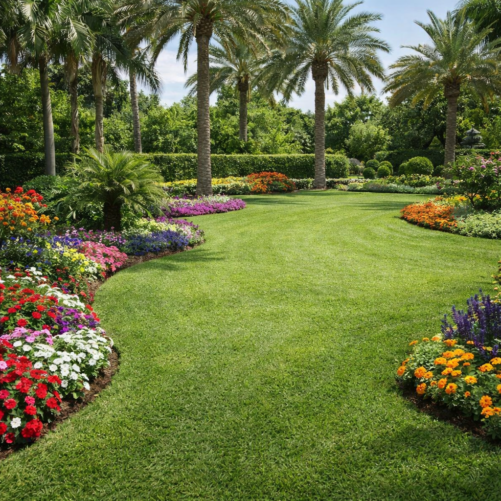
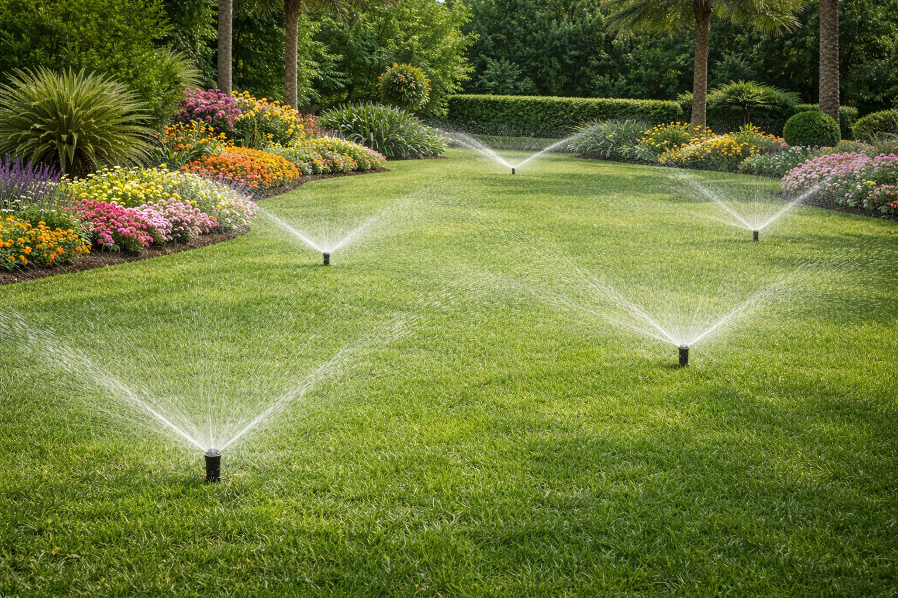
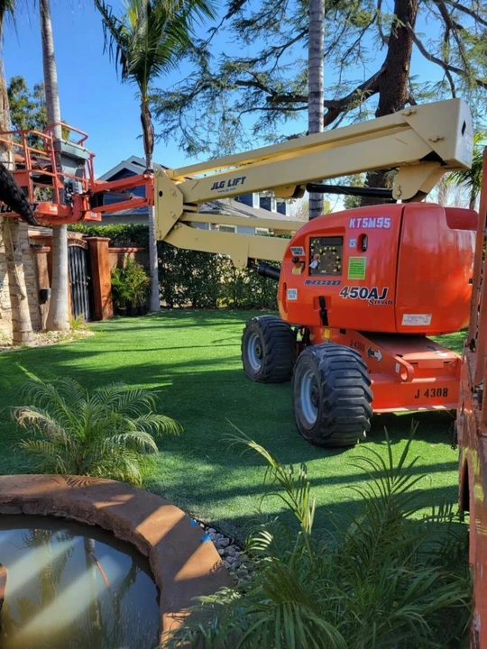
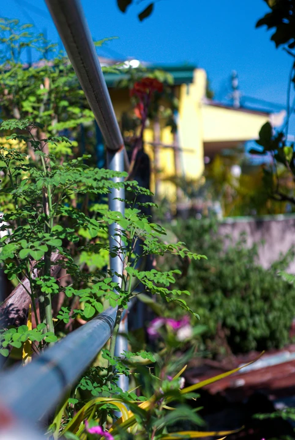
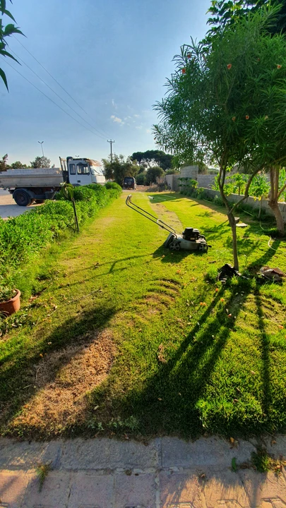
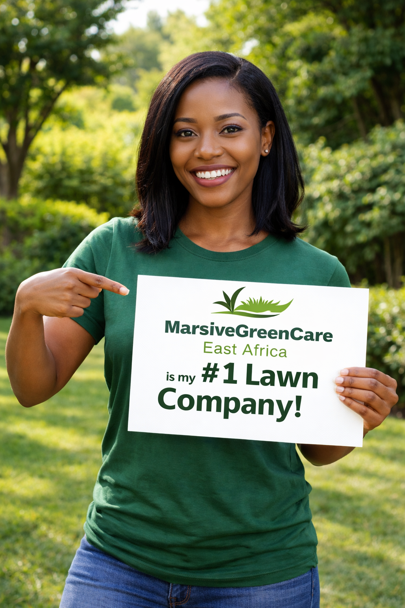
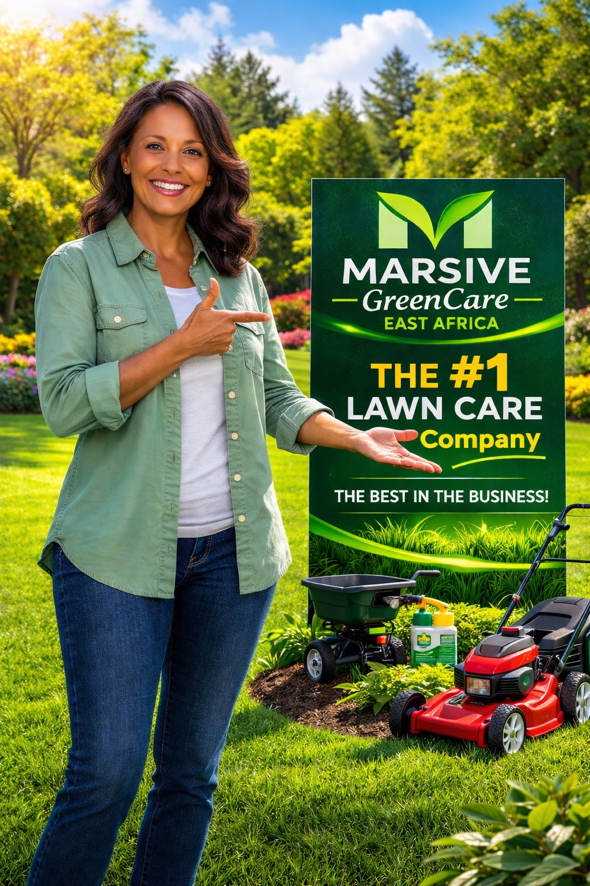

Lawn Mowing Care
Our lawn mowing services keep your grass healthy, lush and well groomed through the seasons. We use modern equipment and proven techniques for dependable results. Read more.

Marsive GreenCare East Africa creates and cares for greener, more beautiful spaces for corporate, urban and reserve areas in Nairobi, Kiambu, Murang'a, Nyeri, Kirinyaga and Embu.
Contact Us Request a QuoteProfessional lawn and land mowing keeps your grass healthy and beautifully maintained, enhancing the look of your property.
 Lawn Care Services
Lawn Care Services
Strategic tree planting that beautifies spaces, provides shade and supports local ecosystems.

Tree Planting ServicesLandscaping designed to create stunning outdoor spaces that reflect your vision while staying environmentally sustainable.
 Landscaping Services
Landscaping Services
Explore the range of professional services we provide for all your landscaping and green-space needs.

Our lawn mowing services keep your grass healthy, lush and well groomed through the seasons. We use modern equipment and proven techniques for dependable results. Read more.

Transform your outdoor space with expert landscape design. We work with you to create beautiful, functional gardens that enhance your property and suit the environment. Read more.

Our irrigation setups give your garden the right amount of water efficiently. We design and install systems that conserve water while promoting healthy plant growth. Read more.
From office compounds to city homes and open reserve land, we create and care for green spaces that suit how they are used.
Welcoming, well-kept grounds for offices, business premises, schools and institutions.
Gardens, estate compounds and compact city plots made greener and more beautiful.
Tree planting and green-space development on larger sites, with the environment in mind.
Discover what sets us apart in lawn care, landscaping and environmental services.

We are dedicated to delivering high-quality services, making sure every project meets our standards for excellence.

Our commitment to sustainability drives eco-friendly practices in all our services, helping preserve the environment for future generations.

We prioritise customer satisfaction and tailor our services to your needs and preferences for a personalised experience.
We also train teams and communities in water-wise gardening, tree planting and care, soil health and green-space maintenance.
Explore Our TrainingLandscaping, irrigation, tree planting, lawn mowing and training, all in one place.
Lawn mowing, land mowing, edging and hedge trimming for healthy, tidy green spaces.
Learn more →Landscape design and planting for corporate, urban and reserve-area spaces.
Learn more →Water-efficient irrigation design and installation for lawns, gardens and grounds.
Learn more →Tree selection, planting and aftercare for beauty, shade and ecosystem health.
Learn more →Practical training on sustainable landscaping and green-space practices.
Learn more →Hear from our customers about their experiences with Marsive GreenCare.

Marsive GreenCare transformed my garden beyond my expectations! Their attention to detail and professionalism were outstanding.
I highly recommend Marsive GreenCare for their quality landscaping services. They truly care about their work and the environment.

The lawn mowing service was impeccable! My yard has never looked better, and their team was friendly and efficient.
Quick answers about our services and how to get started.
We currently work in Nairobi, Kiambu, Murang'a, Nyeri, Kirinyaga and Embu counties. We are working towards serving more Kenyan counties and, later, the wider East African region. If you are outside these areas, contact us and we will let you know what is possible.
We offer landscaping and landscape design, lawn mowing and land mowing, hedge trimming, irrigation setup, tree planting, green-space development and training on sustainable practices.
Yes. We work with corporate and institutional clients, urban homes and estates, and reserve or conservancy areas.
Use the booking form on our homepage, message us on WhatsApp, or call us. Share your location, the service you need and a few details about the space, and we will get back to you.
Cost depends on the size of the space, the design, the plants and materials chosen, and site conditions. Contact us with details of your project so we can advise and quote.
In much of central Kenya, the start of the long rains (around March to May) and the short rains (around October to December) are the best times, because young trees get natural watering while their roots establish. With irrigation, planting can be extended outside these windows.
Choose your service, date and location in a few minutes. We will confirm your booking with you.
Book a Service WhatsApp Us